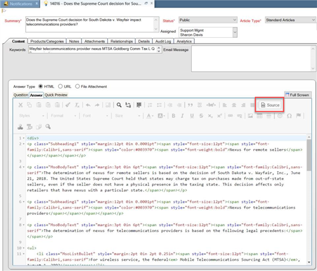

When you add content to Oracle, you set the answer view mode to Source. This enables you to paste the HTML code from the published HTML file. By pasting the code, many of the styles and layouts, such as tables, are pre-formatted. This saves you from having to manually format these elements.
Complete the following to add the published content to Oracle:
Open the publishing folder and locate the HTML file with the content for the knowledge article.
Open the HTML file in a text editor, such as Notepad or Notepad++.
Select and copy all of the content.
In Oracle, do the following:
Add a new answer.
Select the Answers tab and select the Source icon. This enables you to paste the code.

Paste the HTML code into the Answers tab.
Note: If the article heading is included in the code, delete it from the Answers tab. Add the heading (without the HTML tags) to the Summary field.
Select the Source icon again to go back to the normal view. Add links and graphics and apply any necessary style changes.
Finish adding the answer.